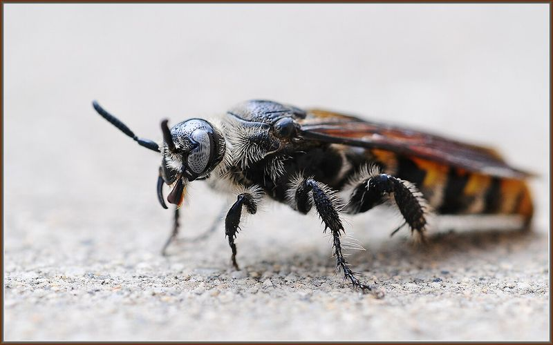

Yellowjackets are the ones that hurt people
They nest in the ground, in wall voids and under decks, they defend aggressively, and a mower or a footstep can set off a whole colony at once. Numbers and aggression both peak in late summer.
Wasps & Hornets
Nest location and species decide how dangerous this is. A paper wasp nest under a soffit is a different job from a yellowjacket colony in the ground next to a walkway, and the ground nest is the one that sends people to the emergency room.

Signs to look for
Not sure from the list? Email a clear photo to veteranspestcontrolllc@gmail.com or text it to (334) 893-4443.
Why it matters here
They nest in the ground, in wall voids and under decks, they defend aggressively, and a mower or a footstep can set off a whole colony at once. Numbers and aggression both peak in late summer.
A nest that was a few cells in spring can hold a large colony by August. The same nest is a far bigger job in September than it was in May.
Wasps sting repeatedly, unlike honeybees. Anyone with a known allergy, and any nest near a door, walkway, play area or work area, should be treated as a priority rather than something to get to eventually.
Our approach
We inspect before we treat, every time. You get told what was found and what we recommend before any work starts.
Book an inspectionLocate and identify We find the nest and identify the species, because paper wasps, yellowjackets and hornets are not handled the same way.
Assess the risk Proximity to doors, walkways, play areas and work areas, and whether anyone on the property has a known sting allergy.
Remove or treat safely Timing and approach depend on the nest type and location. Void and ground nests in particular need care, because a bad attempt sends the colony out at whoever is nearest.
Prevent re-nesting Wasps reuse good sites. We point out the spots on your structure that will attract a nest again next season.
Before we get there
None of this replaces treatment, but it reduces the pressure and makes the work hold longer.
Straight talk on cost
We will not price a wasp or hornet job over the phone before anyone has looked, because a number given blind is either padded or wrong. Here is what actually moves it:
The inspection and the quote are free. You get a real number after we have seen the property, and you decide from there.
Questions
A small, newly started paper wasp nest in an open spot is sometimes manageable. Ground nests, wall voids, enclosed hornet nests and anything near a doorway are not, and that is where most sting incidents come from.
Often, yes. Sheltered spots that worked once tend to work again, which is why we point out the locations on your structure worth checking each spring.
Honeybees are a different situation and should not be treated as a pest. If what you have is a honeybee colony, the right answer is usually a beekeeper for removal, and we will tell you if that is what you are looking at.
Other pests
Do not guess